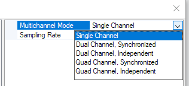

Afedri Plugin
The source code of this plugin is available
here
 .
.
This is an example of a plugin that interfaces Ham Cockpit with an SDR radio. The Afedri radio provides a stream of I/Q (quadrature) values that the program may use to display a wideband waterfall display or band scope, demodulate the signals and play back the audio, or perhaps decode the digital or CW signals in the specialized plugins.
Afedri has a configurable sampling rate and, depending on the model, up to 4 I/Q channels that may be tuned to either different frequencies or be phase-synchronized on the same frequency for diversity reception. (A diversity reception plugin is another cool idea for the third party developers).
The plugin consists of three units, AfedriDevice.cs, Settings.cs and Afedri.cs.
The plugin class, Afedri, implements two interfaces,
IPlugin
and
ISignalSource.
Low Level Functions
The low level functions that talk to the radio hardware are implemented in the
AfedriDevice
class. This class is not described here because its functions are specific to the
Afedri radio, developers of the interfaces for other radios will have to write their own
low level functions. Here is the list of public methods in the AfedriDevice class:
internal void Start(Settings settings) {...}
internal void Stop() {...}
internal bool IsActive() {...}
internal int SetFrequency(long frequency, int channel) {...}
internal byte[] ReadIq() {...}
The Settings Object
The plugin uses the
Settings object to store the MultichannelMode and the
SamplingRate settings of the radio, and the center frequencies of the receiver
channels. In addition to that, it has three helper methods,
ChannelCount, FrequencyCount and IsSync, that derive the corresponding
parameters from MultichannelMode.
class Settings
{
[DisplayName("Multichannel Mode")]
[Description("Enable 1, 2 or 4 channels, synchronized or independent")]
[TypeConverter(typeof(EnumDescriptionConverter))]
[DefaultValue(MultichannelMode.DUAL_CHANNEL_MODE_OFF)]
public MultichannelMode MultichannelMode { get; set; } = MultichannelMode.DUAL_CHANNEL_MODE_OFF;
[DisplayName("Sampling Rate")]
[Description("Receiver's output sampling rate")]
[DefaultValue(Afedri.DEFAULT_SAMPLING_RATE)]
public int SamplingRate { get; set; } = Afedri.DEFAULT_SAMPLING_RATE;
[Browsable(false)]
public Int64[] Frequencies { get; set; } = new Int64[] { 14000000, 14000000, 14000000, 14000000 };
public int ChannelCount() {...}
public int FrequencyCount() {...}
public bool IsSync() {...}
}
Since the frequencies should not be editable, the
Frequencies property
it is decorated with the [Browsable(false)] attribute.
The other two properties in Settings are decorated with attributes in a way similar to that
used in Creating Your First Plugin, but there is one new attribute,
TypeConverter, that makes use of the
EnumDescriptionConverter
class available as part of the Plugin API:
[TypeConverter(typeof(EnumDescriptionConverter))]
Due to this attribute, the drop-down editor for the Enum property shows the
human-readable names of the enum values rather than their identifiers:

The names are included as attributes in the declaration of the Enum type:
enum MultichannelMode : byte
{
[Description("Single Channel")]
DUAL_CHANNEL_MODE_OFF = 0,
[Description("Dual Channel, Synchronized")]
DIVERSITY_MODE = 1,
[Description("Dual Channel, Independent")]
DUAL_CHANNEL_MODE = 2,
[Description("Quad Channel, Synchronized")]
QUAD_DIVERSITY_MODE = 4,
[Description("Quad Channel, Independent")]
QUAD_CHANNEL_MODE = 5
}
IPlugin
The Afedri class implements the IPlugin interface in the same way as in the previously described plugins,
such as the one in Creating Your First Plugin:
public string Name => "Afedri-822x SDR";
public string Author => "VE3NEA";
public bool Enabled { get; set; }
public object Settings { get => settings; set => setSettings(value as Settings); }
public ToolStrip ToolStrip => null;
public ToolStripItem StatusItem => null;
ISignalSource
ISignalSource inherits the from ISampleStream and ITuner, and adds a few of
its own members.
ISignalSource : ISampleStream
The members of ISampleStream allow the host application to receive I/Q samples
from the plugin and find out the format of these data:
public SignalFormat Format { get; private set; }
int Read(float[] buffer, int offset, int count) {...};
event EventHandler<SamplesAvailableEventArgs> SamplesAvailable;
Format
The Signal Format article explains how the
SignalFormat class works.
The plugin creates an instance of SignalFormat,
populates it
with the characteristics of its I/Q data, and exposes the object as a
read-only property. If the data characteristics change, e.g., when the user
changes the sampling rate in the Settings dialog, the plugin reflects the changes
in the Format object.
Here is how the properties of Format are calculated:
int rate = settings.SamplingRate;
Format = new SignalFormat(rate, true, settings.IsSync(), settings.ChannelCount(),
-(int)(rate * 0.47), (int)(rate * 0.47), 0);
SamplingRateis set to the sampling rate of the radio;IsComplexis set to true since the radio produces complex-valued (I/Q) samples;IsSyncdepends on theMultichannelModesetting, it is set to true if multiple channels are synchronized, or false if they are independent;Channelsis the number of data channels the radio is configured to deliver;DialOffsetis set to 0, the operating frequency is assumed to be at the center of the sampled band;PassbandLowandPassbandHighare symmetric around the center, they are set to cut off the last 3% of the sampled bandwidth at each side, where the mirror images and other artifacts may be present.
The constructor uses default values
(Sideband = Sideband.Upper and StageGain = 0)
for the rest of the parameters.
Read
The plugins that interface with the radios are used by the
DSP Pipeline as sources of I/Q or audio data.
The pipeline may call the Read method of the plugin at any time and request any
number of samples. Moreover, this call will likely be made on a worker thread.
To satisfy these requirements, the plugin uses a thread-safe ring buffer
for storing and serving the data. The plugin uses the
RingBuffer
class from the
library of DSP functions
available as part of the Ham Cockpit API.
private readonly RingBuffer buffer = new RingBuffer(DEFAULT_SAMPLING_RATE);
The ring buffer stores the samples in the single precision
floating point format. When the samples from the radio
arrive, the plugin writes them to the ring buffer
using the WriteInt16 method, and the 16-bit integer
values are automatically converted to floats:
buffer.WriteInt16(receivedBytes, receivedBytes.Length);
The Read method simply reads the data from the ring buffer
to the provided buffer:
public int Read(float[] buffer, int offset, int count)
{
return this.buffer.Read(buffer, offset, count);
}
SamplesAvailable
Not all signal processing plugins are parts of the
synchronous data processing in the
DSP Pipeline. There are some that read the input samples but do
not produce the output. Examples are band scopes,
S-meters, decoders, etc. These plugins rely on the
SamplesAvailable event in obtaining the data.
The Afedri plugin invokes this event using the
SamplesAvailable event of the ring buffer:
buffer.SamplesAvailable += (o, e) => SamplesAvailable?.Invoke(this, e);
ISignalSource
The methods of the ISignalSource interface allow the host
application to initialize, start and stop the data source,
and receive a notification when the data source stops working:
public void Initialize() { }
public bool Active { get => device.IsActive(); set => SetActive(value); }
public event EventHandler<StoppedEventArgs> Stopped;
Initialize
This method is empty in the Afedri plugin since the radio does not require initialization.
Active
The host application uses the Active property to
start and stop the data feed, and to read the current status
of the plugin. Here is how this property is set:
private void SetActive(bool value)
{
if (value == Active) return;
if (value)
{
int rate = settings.SamplingRate;
Format = new SignalFormat(rate, true, settings.IsSync(), settings.ChannelCount(),
-(int)(rate * 0.47), (int)(rate * 0.47), 0);
buffer.Resize(rate * settings.ChannelCount()); //0.5s worth of data
device.Start(settings);
Tuned?.Invoke(this, new EventArgs());
stopping = false;
iqThread = new Thread(new ThreadStart(IqThreadProcedure)) { IsBackground = true };
iqThread.Start();
}
else
{
stopping = true;
iqThread.Join();
device.Stop();
}
}
When the plugin is activated, the SetActive method
updates the parameters in Format, starts the device,
and invokes the Tuned event so that the host application
knows to read the current frequency. It also starts the worker
thread, iqThread (see below), that reads I/Q data from the radio
in a loop.
When the plugin is deactivated, is terminates the worker thread and stops the device.
Stopped
The host application needs to know when something goes wrong
with the radio and the plugin is no longer able to produce
the data, e.g., because the radio was turned off. The Stopped
event is used as a notification of this condition.
When TCP communication with the radio fails, the
plugin stops the device and invokes this event, as shown in the
SetDialFrequency example below.
ISignalSource : ITuner
The ITuner interface allows the host application to read and set the dial frequency of the radio and
receive notifications when the frequency changes:
public long GetDialFrequency(int channel = 0)
{
return settings.Frequencies[channel];
}
public void SetDialFrequency(long frequency, int channel = 0)
{
settings.Frequencies[channel] = frequency;
if (Active)
try
{
device.SetFrequency(frequency, channel);
Tuned?.Invoke(this, new EventArgs());
}
catch (Exception e)
{
device.Stop();
var exception = new Exception($"Afedri command CI_FREQUENCY failed:\n\n{e.Message}");
Stopped?.Invoke(this, new StoppedEventArgs(exception));
}
}
public event EventHandler Tuned;
Implementation of this interface is simple because Afedri does not have a front panel control to change its frequency.
The GetDialFrequency simply returns the frequency of the specified channel stored in Settings,
SetDialFrequency stores the new value in Settings and uses the low level function to
actually set the frequency, and
the Tuned event is invoked when the plugin sends the new frequency to the radio.
If communication with the radio fails during SetDialFrequency, the plugin stops the device and invokes
the Stopped event.
iqThread
The worker thread, iqThread, is started or stopped when the Active property changes.
The thread procedure, shown below, reads I/Q samples from the radio and writes them to the ring buffer.
If an error occurs, it stops the device and invokes the Stopped event. Note that the event is posted
from the worker thread to the main thread of the program using context.Post().
private void IqThreadProcedure()
{
try
{
while (!stopping)
{
var receivedBytes = device.ReadIq();
buffer.WriteInt16(receivedBytes, receivedBytes.Length);
}
}
catch (Exception e)
{
//exception occurred on the UDP reading thread.
//stop Afedri, notify the host and terminate the thread
device.Stop();
var exception = new Exception($"Unable to read I/Q data from Afedri SDR:\n\n{e.Message}");
context.Post(s => Stopped?.Invoke(this, new StoppedEventArgs(exception)), null);
}
}